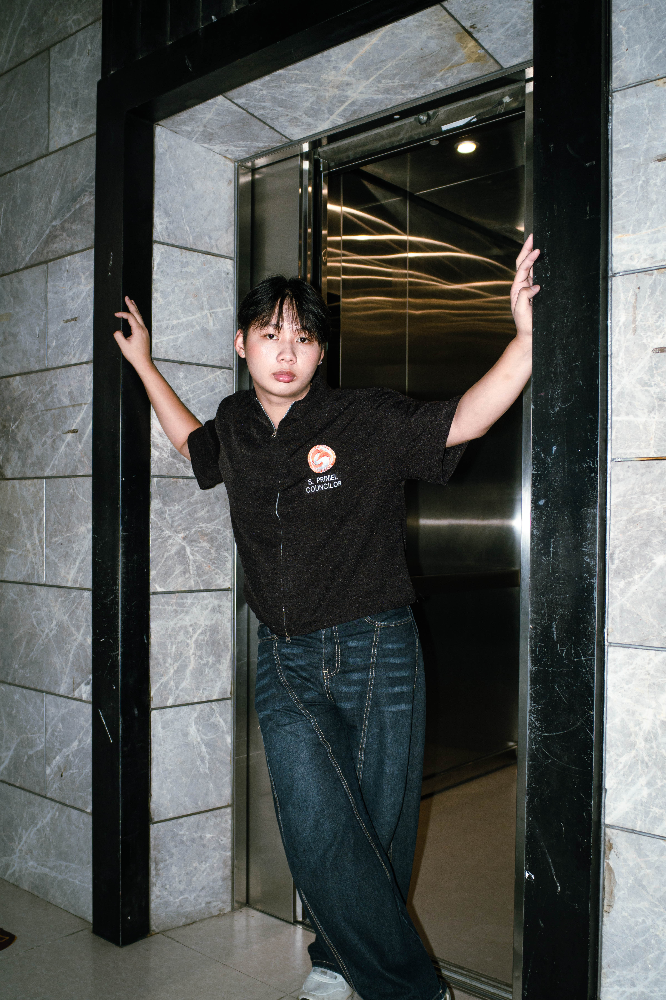
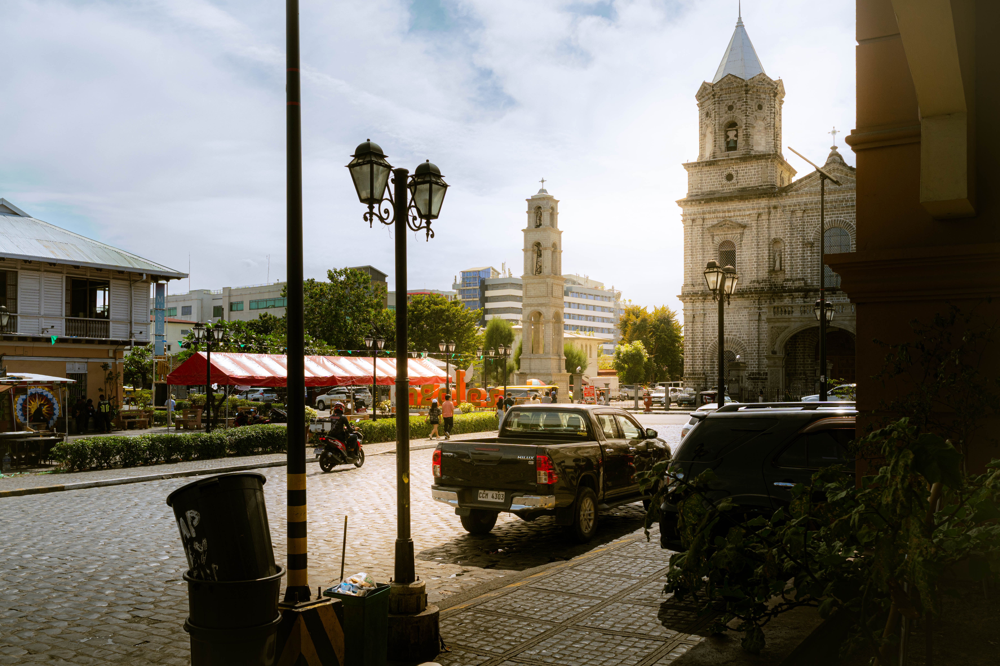
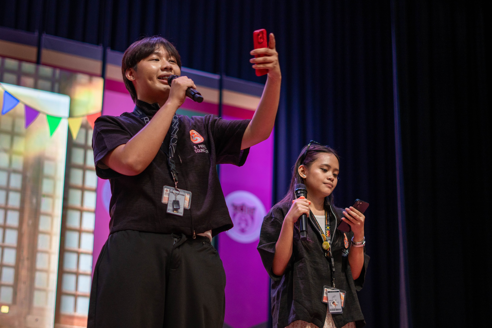
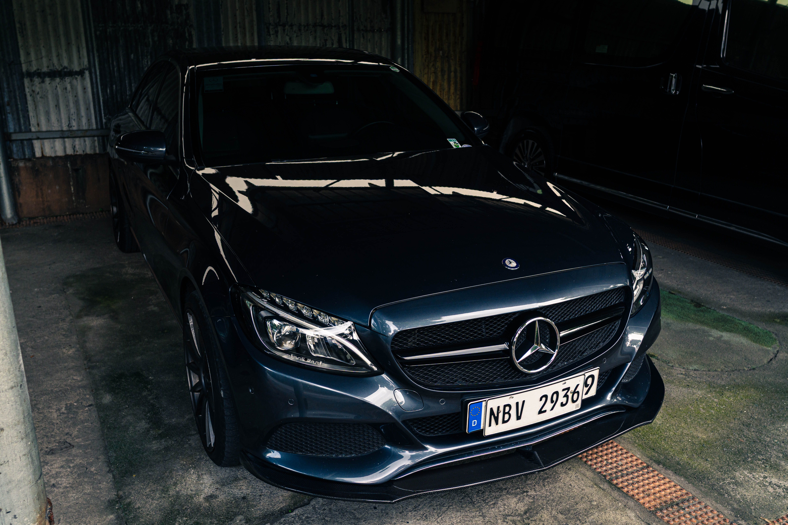
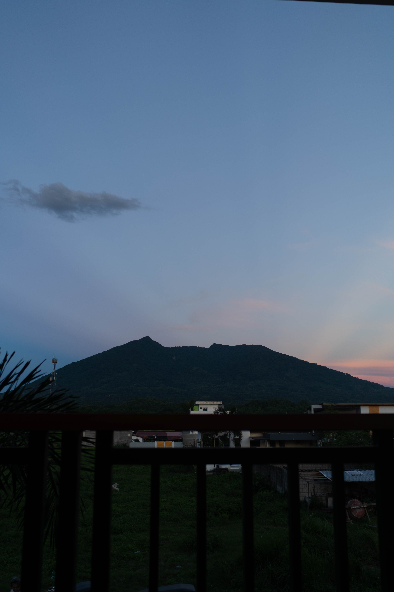
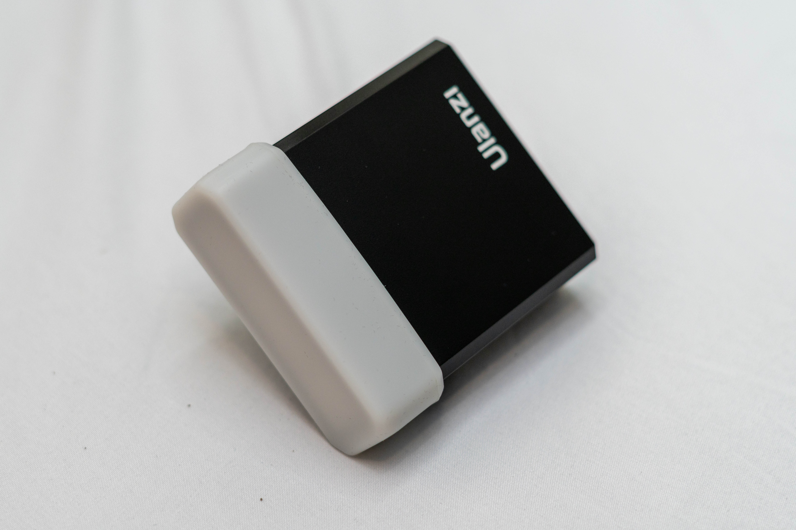
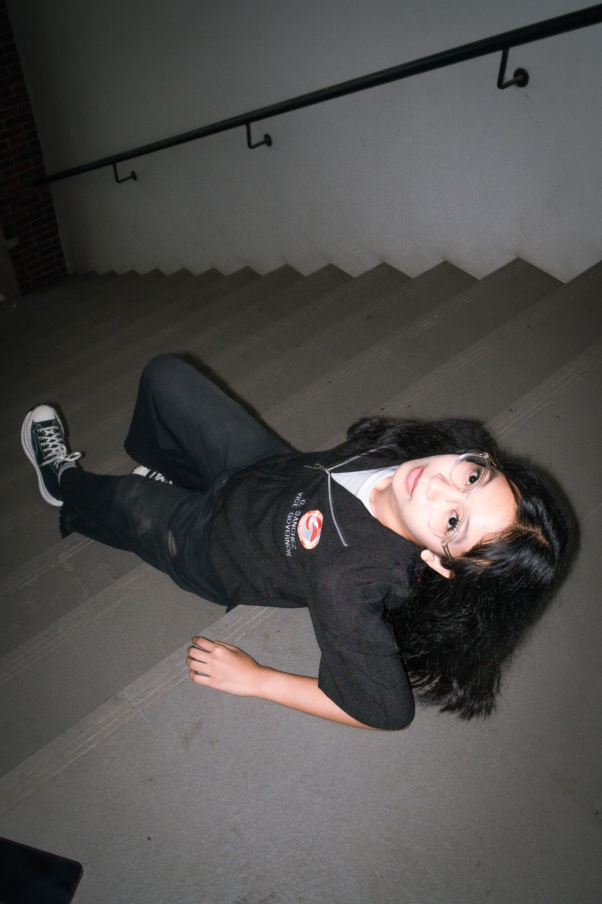
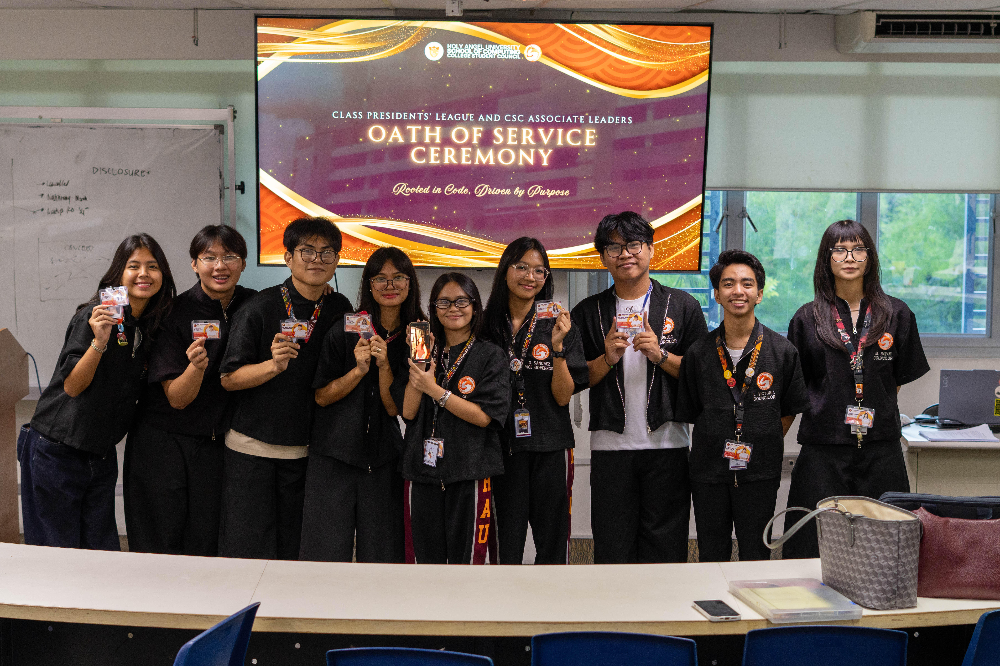
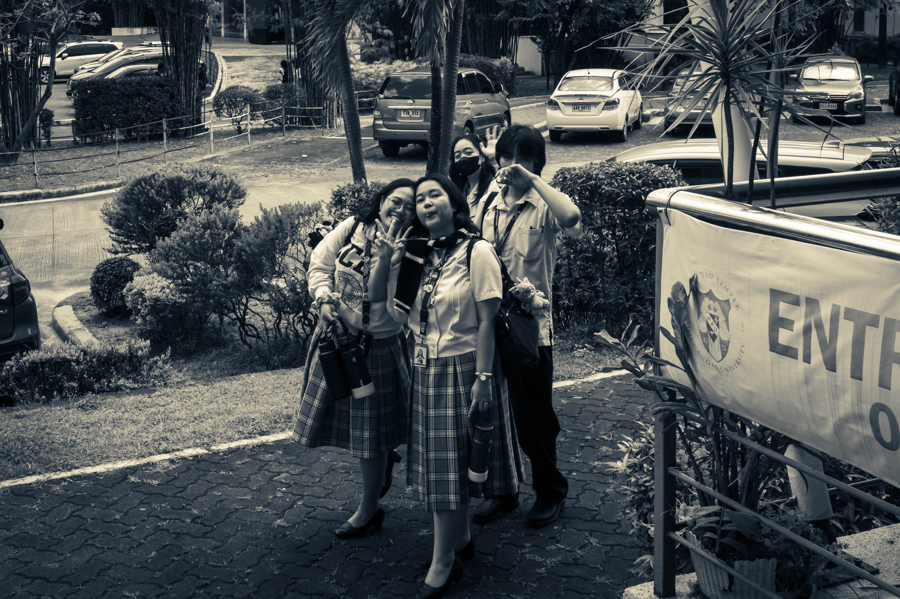
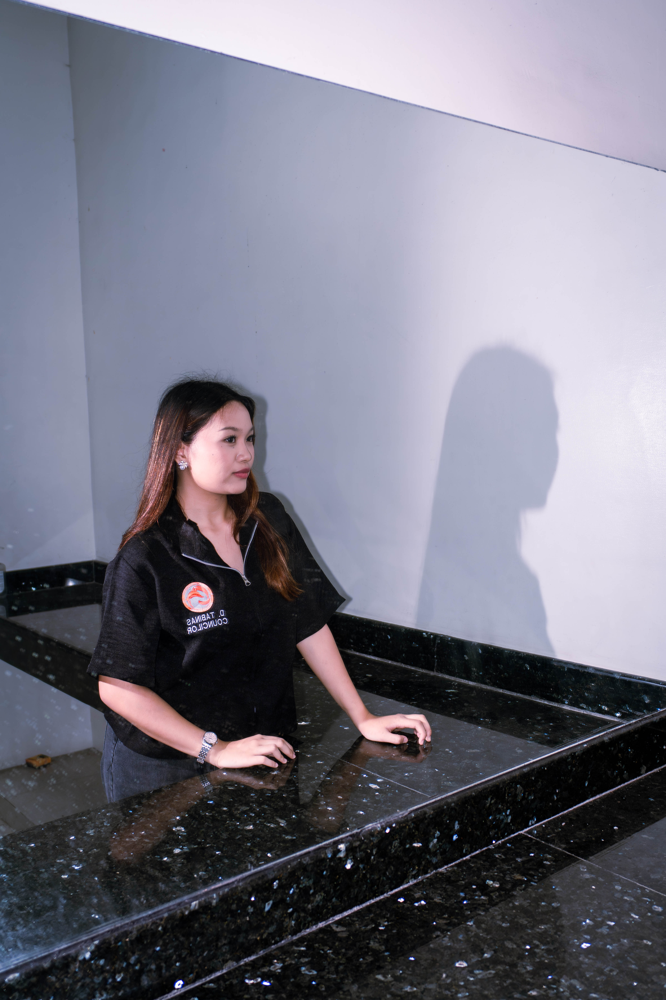

Projects / Photography
Photography
Photography work across events, portraits, and street photography, shot mainly on Sony mirrorless gear.
What I shoot
Skills & focus areas
Event Photography
Street Photography
Portrait Photography
Flash Photography
Photo Documentation
Photojournalism
Photo Editing (Lightroom)
In the bag
Equipment
Camera
Sony A6700
● Primary
Camera
Canon 1200D
● Secondary
Lenses
Sony FE 50mm & 20mm primes, Canon 16-50mm & 70-300mm kit lenses
● Active
Lighting
Ulanzi F32 & F12 speedlights, ring light
● Active
Support
BBME ST-666 tripod, K&F Concept ND2–ND400 filter, DJI OM8 gimbal
● Active
Post
DaVinci Resolve Studio, Adobe Lightroom Classic
● Active
Track record
Experience
2022–23
First camera
Started with a Canon 1200D, mostly used for school memories — the start of the journey.
2024
Learning manual mode
Learned manual settings alongside a fellow starting photographer, and began documenting organization events together.
2025
Street photography
Focused on street photography to sharpen composition and timing, still shooting on the Canon 1200D until getting the Sony A6700.
2026
CSCSOC-HAU Media Head
Got the Sony A6700 and joined CSCSOC-HAU as Media Head under the Public Communications Committee, handling photography and documentation for the org's Facebook page.
Selected work
Book a shoot
Gallery

PORTRAIT — 001
STREET — 014
EVENT — 022
EDITORIAL — 007
LANDSCAPE — 003
PRODUCT — 009
PORTRAIT — 002STREET — 019

EVENT — 031EDITORIAL — 011

LANDSCAPE — 006
PORTRAIT — 002